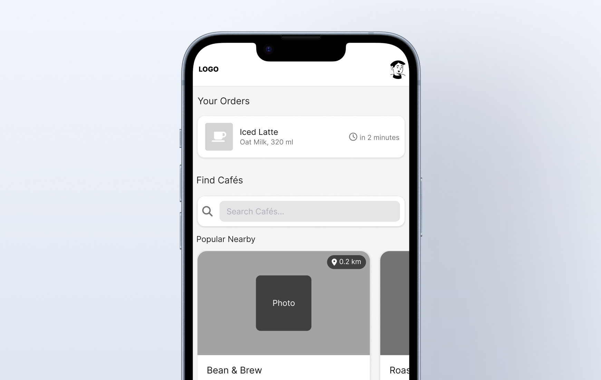

Coffee Pickup Interface
Role
UX/UI Designer
Company
Practice project
Product
Coffee ordering app
Focus
Wireframing, User Flow, UX Design

Overview
Wireframing a seamless pickup flow
As a personal practice project, I explored the UX patterns required for a high-frequency utility app. "Brew & Bean" is designed to minimize friction for users on the go, allowing them to order and pay before they arrive. The wireframes prioritize speed, featuring a map-based discovery tool for filtering amenities like Wi-Fi or pet-friendly spots, a streamlined customization flow for detailed drink preferences, and real-time status updates that end with a simple QR code for immediate pickup.
View interactive prototype →